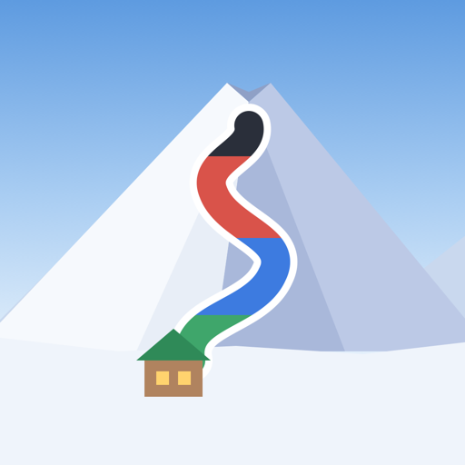
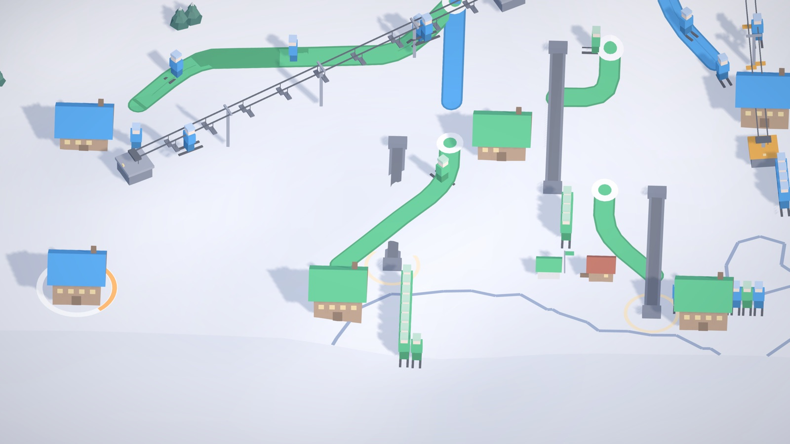
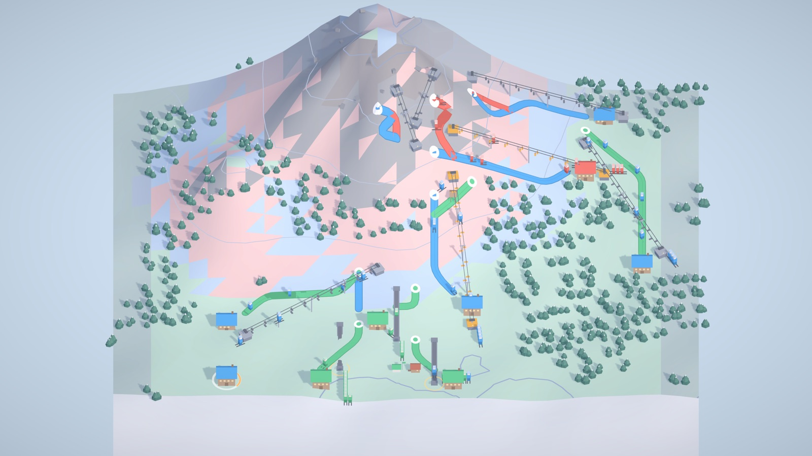
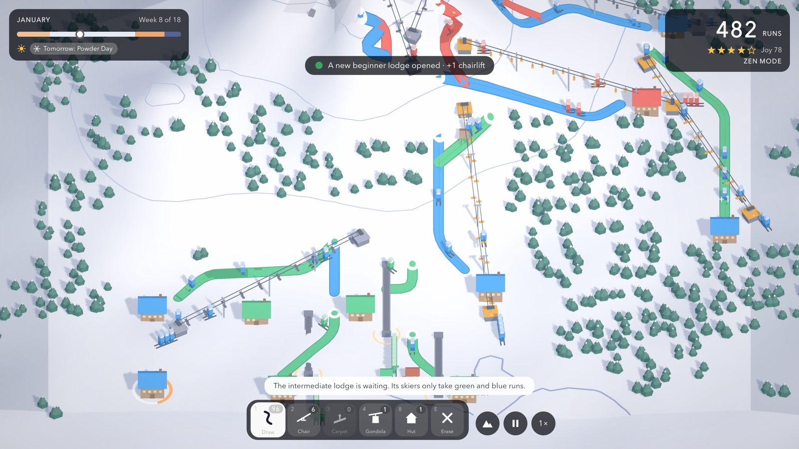
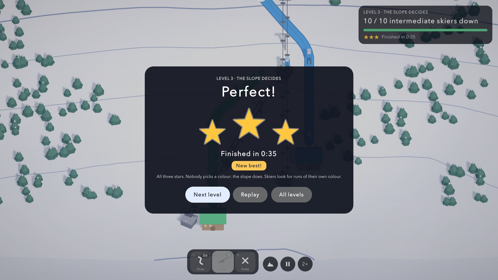
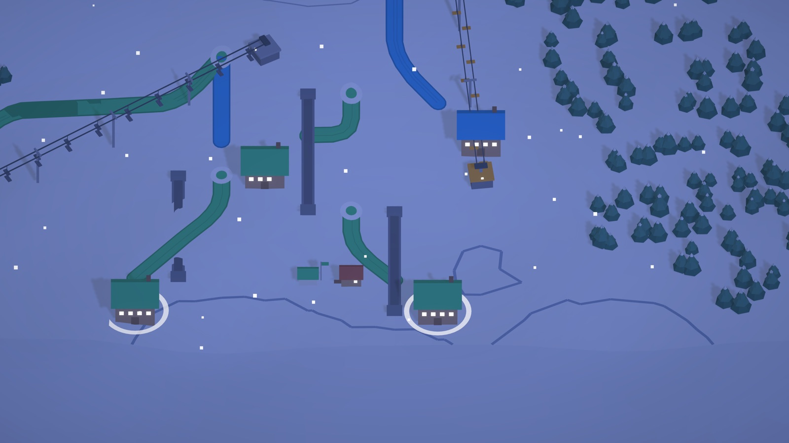
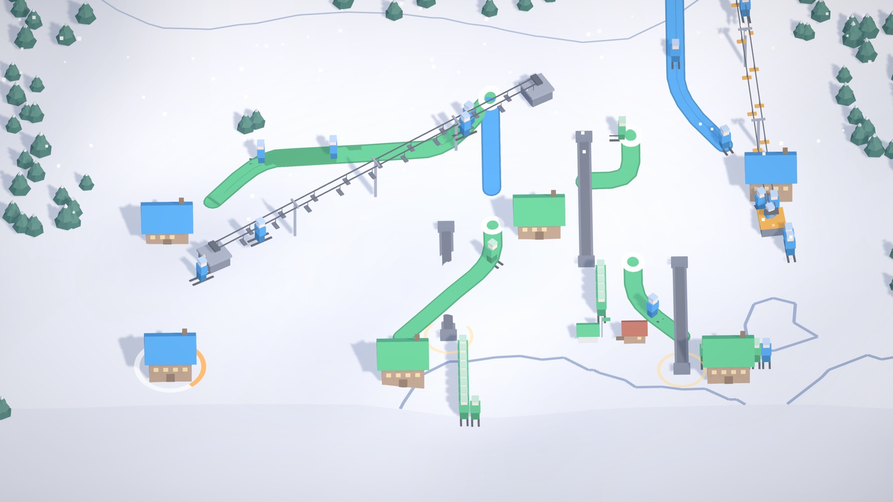
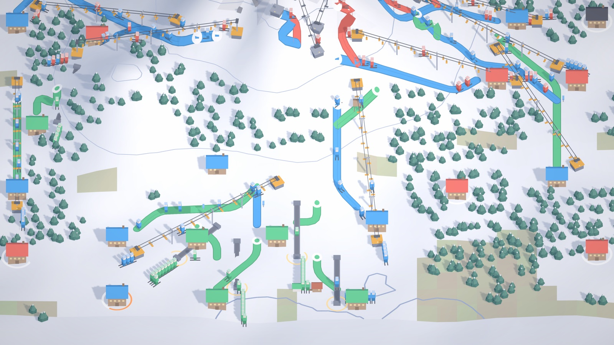
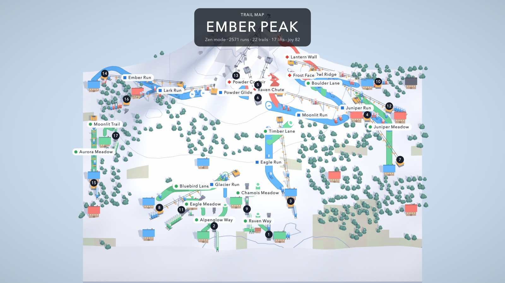

The idea
An empty mountain becomes a ski resort
You draw lifts up the mountain and runs back down. Skiers leave their lodges, ride up, ski the runs that suit them and head home at dusk. The network grows week by week, and so does the puzzle.

Draw lifts up. Draw runs down. Let the mountain decide the rest.
A calm ski resort puzzle for iPhone, iPad and Mac. In development.
Prototype footage, captured in the game.
The idea
You draw lifts up the mountain and runs back down. Skiers leave their lodges, ride up, ski the runs that suit them and head home at dusk. The network grows week by week, and so does the puzzle.

The rule at its heart
Nobody picks a difficulty. Draw a run and the terrain sets it. Colour always comes with a shape.

Skiers and lodges
Beginners need gentle greens near their lodge; experts want the black runs off the summit. If a lodge's skiers can't find a way up and back, its patience runs out, and that is the only way to lose.

Thirty levels
The game teaches itself. Thirty short levels in five chapters bring in one thing at a time, from a single lift and run to a whole season on Ember Peak: carpets, ski schools, red and black runs, nights and upgrades, gondolas, wind and the spring melt.
Finish a level for a star, finish it quickly for three. The clock stops when you pause, so stars reward a good design, not fast fingers.

A day and a season
A morning rush, an afternoon return, lifts closing at dusk, and a quiet night when you choose tomorrow's upgrade. Over an 18-week season the weather turns, the mountain opens up, and in spring the snow line climbs.



The season's end
Named runs, numbered lifts, the busiest runs drawn widest. A picture of your own season to keep and share.

How it plays
No account, nothing to buy, fully playable offline.
Touch, mouse and keyboard, or a game controller.
Colour plus shape, a colour-blind palette, high contrast, reduced motion, half speed and a Zen mode.
Where it is
Thirty levels in five chapters on two mountains, Bluebell Hollow and Ember Peak, and free play on Ember Peak: a full 18-week season in three modes (Season, Zen, Expert), weather, spring melt, the trail map and generative music. Six more mountains are planned.
Made by Semih Saydam, independent developer (Kachunk, ARC). For press, testing or anything else: semihsaydamz@gmail.com.